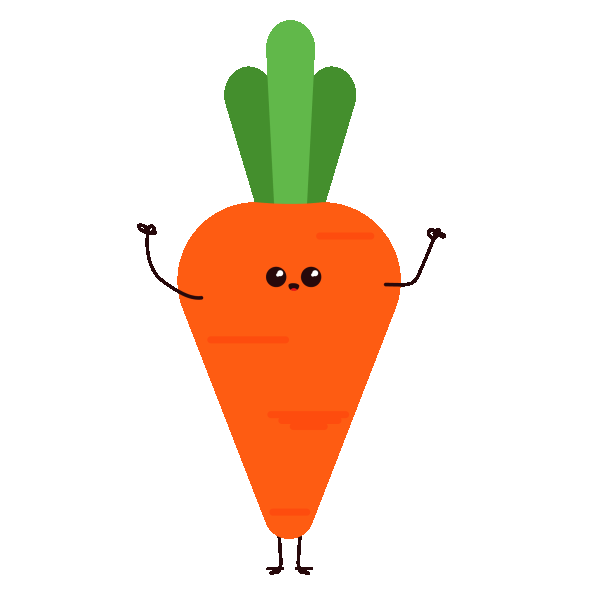
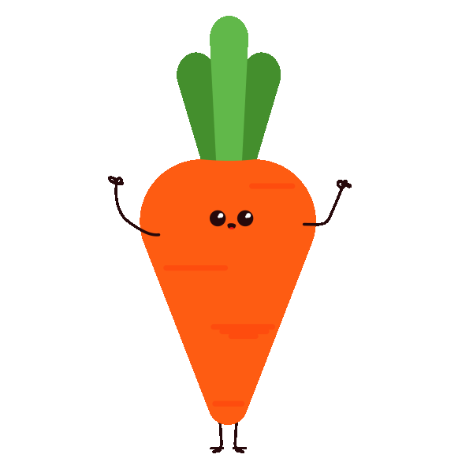

HJÆLP! Verden er i nød. Madspild skader klimaet! Hvis madspild var et land, vil det være den tredje største Co2 udleder!
Det her er mit ynglingstræ. Det største træ i skoven! Det er desværre vissent og døende og det gør mig ked af det. For at holde træet i live og hjælpe klimaet skal du vide noget om madspild!


Herunder kommer der en masse informationer du skal have styr på, før du er klar til at redde træet og hele jordkloden!
Hver dansker smider cirka 81 kilo mad ud om året. Det er næsten det samme som at have 405 hamsterunger i en stor rygsæk – men de ville nok ikke sidde stille
 

Alle gulerodder er lige gode! Selvom din gulerod er lidt skæv, mærkelig eller skør, kan den stadig spises! Gør det for miljøet
Mad kan også få et nyt liv! I stedet for at at smide næsten gammelt mad ud, så prøv at lave en suppe eller smid det sammen med nogle ris!
Hvis dit brød er lidt tørt, kan du lave ristet brød, arme riddere eller bruge det til brødkrummer. Brød er nemlig lækkert, især baguettes!
Du er der næsten! Træet vokser og det gør din viden om madspild også!

Tak fordi at du vil gøre en forskel. Selv det små handlinger hjælper! Hvad tænker du at du vil prøve derhjemme nu?
Hop over på siden "nyttige links" i toppen når du er færdige, for at få hjælp og inspiration til at gøre din del af forandring. Tal eventuelt også sammen med en forældre eller ven omkring det
Du er nået i mål. Prøv se hvor flot og frodigt skovets træ er blevet! Du er en sand helt og du skal takkes for dit hensyn til vores alle jord
Hvis du går længere ned på siden kan du nu se hvor flot landskabet og træets rødder er blevet, efter vi hånd i hånd har gjort vores del for at minsdke madspil!